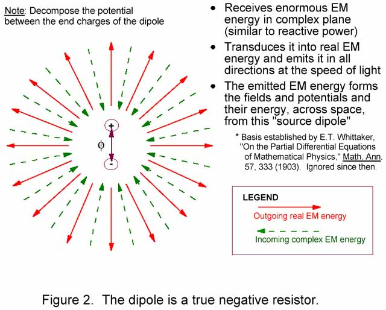
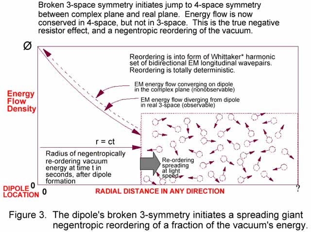
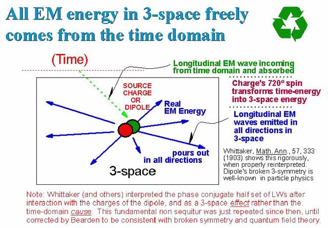

| The Tom Bearden Website |
|
Broken Symmetry For the open-minded reader, let me explain what broken symmetry means, and what the broken symmetry of a dipole means with respect to powering any dipolar EM circuit. The strong prediction of broken symmetry by Lee and Yang and its experimental proof by Wu et al. in 1957, initiated a great revolution across physics and won a nearly instant Nobel Prize in December 1957 for Lee and Yang. One of the broken symmetries proven by Wu et al. and published in 1957 is the broken symmetry of opposite charges, as on the ends of a dipole. That asymmetry is used by charges and dipoles for extracting and pouring out Electromagnetic energy from the vacuum, yet not one current Electrical Engineering or classical electromagnetics textbook mentions the energy implications of dipolar asymmetry. Nor do they mention that every charge and dipole freely pours out real observable EM energy continuously, with no observable energy input. Thus the textbooks implicitly assume that all EM fields, potentials, and energy are freely created out of nothing at all by their associated source charges. Either the conservation of energy law is falsified, or the source charge must be receiving the necessary energy input in virtual state form from the active vacuum. Broken symmetry essentially means that something virtual (shadowy, but real in a special sense and widely used in physics; it has real physical consequences, since it creates all the forces of nature) has become observable (real in the ordinary everyday sense that it can be detected, measured, observed, and used.). The broken symmetry of the end charges of a dipole rigorously means that, once the charges are forcibly separated to form that dipole, the dipole (its end charges) continuously absorbs virtual (fleeting) photons from the seething vacuum, coherently integrates these "photon pieces" into real observable photons, and re-emits the resulting real EM energy in the form of real observable photons in all directions at the speed of light. That is not this author's work; that is particle physics as justified by the award of two Nobel Prizes. It isn't even in the electrical engineering model, so no objection based on standard classical EM and electrical engineering concepts has any validity at all. That's why a dipolar permanent magnet, with opposite magnetic charges on its ends locked in there by the material itself, continuously exhibits magnetic field in the space surrounding it (out to the ends of the universe, if the magnet has been around long enough). There is a continuous and steady stream of EM energy, extracted directly from the vacuum and integrated into observable magnetic field energy, pouring forth from the dipolarity of that magnet. At any external point in that stream, the steady flow will give a steady or "static" reading for the magnetic field and thus for the intensity of the flow at that point. Actually there is no such thing as a "static" field or potential in the universe; simply check out Whittaker's 1903 decomposition of the "electrostatic" scalar potential into bidirectional longitudinal EM waves, and his 1904 decomposition of any field and wave pattern into two such potentials comprised of bidirectional longitudinal EM waves. The 1904 paper founded what today is known as superpotential theory. The 1903 paper has been largely ignored by the academics, although it has been formidably weaponized by several nations, notably the Russians not long after WW II. Application of Whittaker's 1903 and 1904 papers is responsible for the weapons that then Secretary of Defense Cohen referred to in 1997.
|




